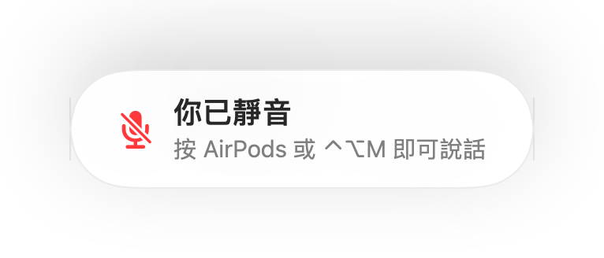
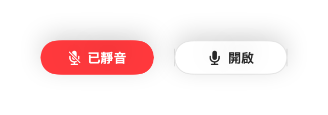
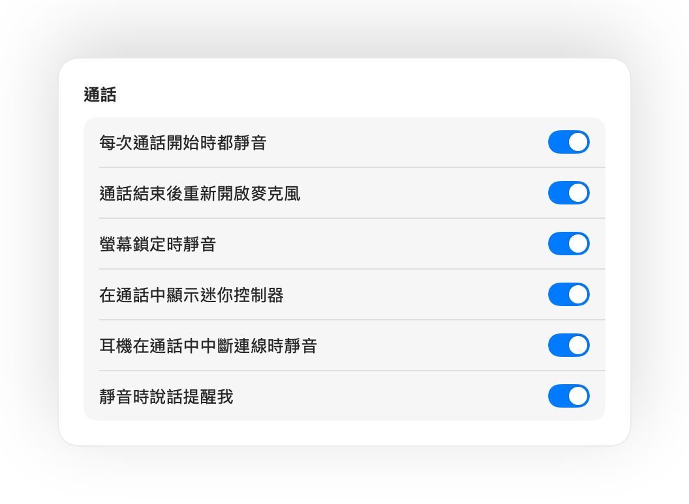

按壓 AirPods 即可靜音
在任何通話中，按壓耳機柄一次即可靜音，再按一次取消靜音。即使在 Chrome 中也適用（Google Meet 等網頁通話平時會忽略 AirPods 按壓）。
適用於 Mac 的 Muffle
按壓 AirPods 或使用一組鍵盤快速鍵。Muffle 會直接關閉麥克風本身，讓 Google Meet、Zoom、Teams、Slack 和所有其他 App 完全靜音。
免費試用 3 天。之後一次付清，無需訂閱。 適用於 macOS 14 Sonoma 和後續版本。
直接在選單列即可切換靜音、挑選麥克風、鎖定音量，並開啟或關閉各項功能。
Muffle 在硬體層級將麥克風靜音，因此無論使用哪個 App、瀏覽器或分頁都適用。
通話中只要按壓耳機柄，Muffle 就會直接關閉麥克風，讓 Meet、Zoom、Teams 和其他所有 App 都收不到聲音。
Muffle 會辨識你的聲音並及時提醒，免得你對著空氣講完全部想法。

大多數靜音按鈕只能將單一 App 靜音。Muffle 則是直接關閉麥克風本身，讓 Mac 上的所有 App 都接收不到任何聲音。
在任何通話中，按壓耳機柄一次即可靜音，再按一次取消靜音。即使在 Chrome 中也適用（Google Meet 等網頁通話平時會忽略 AirPods 按壓）。
在靜音狀態下開始說話時，Muffle 會及時提醒你，免得你對著空氣發表長篇大論。

Control-Option-M 讓你隨處都能靜音，即使通話位在背景分頁也沒問題。靜音時按住即可說話，放開後再次靜音。
通話時會顯示小型浮動按鈕提示麥克風狀態，按一下即可靜音或取消靜音。

自由選擇快速鍵的運作方式：點一下切換、按住說話，或是按住以暫時靜音咳個嗽。你可以設定獨立的靜音與取消靜音按鍵，或長按單一按鍵（例如右側 Option）或額外的滑鼠按鈕。

取消靜音只為講一句話？若你在設定的時間內未再開口，Muffle 就會再次將你靜音。系統只會辨識你的說話聲，打字聲或背景雜音都不計入。
在安靜的室內戴著 AirPods 時，Muffle 會建議改用 Mac 麥克風，讓 AirPods 能以完整音質播放通話音訊。周圍吵雜時，則會建議切換回 AirPods 麥克風。

Chrome、Zoom 和 Teams 常會自行調整麥克風音量。將音量鎖定後，Muffle 就會自動幫你調回。
每次通話開始時都靜音、通話結束後重新開啟麥克風，並在鎖定 Mac 時自動靜音。

如果耳機在通話中突然斷線，Muffle 會在通話切換到 Mac 內建麥克風並收進整個房間聲音前立即靜音。
可從「捷徑」App、Siri、Stream Deck、Raycast 或控制中心的按鈕執行靜音。
螢幕邊緣閃爍綠光或紅光、彩色選單列圖示、浮動按鈕，以及可針對個別麥克風關閉的提示音。隨心開啟你喜歡的提示方式。
Muffle 絕不會錄製、儲存或傳送任何音訊。它僅開啟或關閉你的麥克風並讀取音量。沒有帳號、沒有分析資料、完全不追蹤。
從 Mac App Store 安裝 Muffle 並允許取用麥克風。
和平常一樣在任何 App 中加入通話。
按壓 AirPods、按下 Control-Option-M 或按一下選單列圖示即可靜音。
支援。Chrome 不會將 AirPods 的靜音按壓傳遞給網頁通話，因此 Muffle 會接收該動作並直接將麥克風靜音。瀏覽器分頁中的所有通話也都適用。
你的通話 App 可能仍會顯示麥克風處於開啟狀態，因為 Muffle 關閉的是麥克風本身，而非 App 內的按鈕。但無論如何，對方都聽不到你的聲音。靜音時，選單列中的 Muffle 圖示會變為紅色。
支援 AirPods Pro、AirPods 3 和後續機型，以及 AirPods Max，還有具備通話控制功能的 Beats 機型。鍵盤快速鍵和選單列則適用於任何麥克風。
支援。Muffle 適用於你 Mac 上所有使用麥克風的 App，無論是桌面應用程式或瀏覽器通話皆可使用。
不需要。你可以免費試用所有功能 3 天，之後只要一次性購買即可解鎖 Muffle。
macOS 只會將 AirPods 的按壓動作傳遞給正在使用麥克風的 App，因此 Muffle 會在通話期間保持一條無聲連線。期間不會進行任何錄音。
Muffle 在結束時會重新開啟麥克風，因此你永遠不必擔心被卡在靜音狀態。
支援 macOS 14 Sonoma 和後續版本。控制中心按鈕需要 macOS 26 或後續版本。
支援。在「設定」中選擇「按住說話」，按住快速鍵即可發言。你也可以長按單一按鍵（例如右側 Option 或 fn）或額外的滑鼠按鈕。
當通話使用 AirPods 麥克風時，AirPods 會切換至通話模式，播放音質隨之降低。在安靜的室內，Muffle 會建議改用 Mac 的麥克風，讓 AirPods 保持完整音質播放。
不會。Muffle 使用 Apple 的裝置端聲音分析技術來辨識語音，因此只有你開口說話才算數。打字聲、點擊聲和背景雜音都不計入，且絕不會進行任何錄音。
Muffle 提供 3 天免費試用。